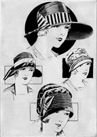

1928—The New-Way Course in Millinery and Hat Design
Lesson 23—Hat Box Secrets
Hat-Box Secrets
No matter how clear and exhaustive lessons are made, no matter how much time and thought is devoted to their preparation, little questions are bound to arise that are not covered in the particular subjects treated throughout the course. We feel that these lessons are not complete until we have covered every possible phase of millinery so completely, so exhaustively, that no problem can possibly confront the student.
For this reason we have combed closely every book on millinery ever written; we have culled the best ideas from many years of experiences—and have gathered into this lesson of HAT-BOX SECRETS the little important bits of information that do not warrant a lesson by themselves, that have no definite part in the lessons already covered—and yet that are of too great importance to be omitted.
These HAT-BOX SECRETS contain valuable information—much of it being information that cannot be found elsewhere. We add it to a course that is already one of the most complete and authoritative of its kind, and we know that the student will see its value instantly. The subjects are entirely unrelated. Each paragraph is a little lesson in itself. No attempt has been made to arrange the information with any regard for sequence or chronology. You must simply read this lesson as you would read a story, noting well what is said, checking the parts you particularly want to remember, reading and studying clear through to the end and remembering carefully what you have read.
But unlike the story, you must return to this lesson frequently, When there is some important bit of information you are seeking, but that does not seem to have a particular place in the course—look for it in HAT-BOX SECRETS. If there is some new idea you have been thinking of—some original and "different" design for which you have been striving and for which just the proper spark of inspiration is lacking—glance through your HAT-BOX SECRETS. You may find just the inspiration you are seeking— just the random idea that will crystallize your own idea.
And so we offer you HAT-BOX SECRETS as a sort of "finishing touch" to your course—a more or less "mixed lesson" on important subjects relating to millinery. We know you will find it both interesting and valuable and we want you to give it as much careful attention, and to study it as wholeheartedly, as the other lessons of the course.
The Story of the Veil
Few people suspect the large part veils play in the charm of hats. Millinery has a great deal for which to be grateful to veils, for many a plain unattractive hat is made charming by the simple addition of a smart veil. Of course they are not always in style, but we want you to know about them just the same.
There are many kinds of veils, of course—street veils and bridal veils and mourning veils—each veil serving its own particular purpose in its own particular way. Bridal veils and mourning veils have already been discussed; but let us see exactly how veils should be arranged for street wear.
The veil is symbolic of an ancient custom when women never appeared on the street unless their features were carefully hidden from observation. Although the tradition is a very beautiful one, we of the twentieth century must admit that it is not very practical. The veil worn today is meant as a decoration, an ornament—it should not conceal the features unless it is a mourning veil.
The draping of the veil depends largely upon the kind selected, the shape of the hat, and the face which is to be attractively framed. Every woman must be somewhat the designer of her own veil-drape, but there are some general rules that can be followed.
If an oblong veil is used, the best way to arrange it is to catch up one end close to the crown, and allow the other end to fall gracefully in cascade effect at the side. Of course, this is not becoming to all types of shapes, but with the rolling brim sailor and other brimmed hats it is usually most attractive.
With straight sailor shapes, picture hats and other hats of this type, veils may be arranged to fall over the brim and shade the eyes. But the brim should always be wide enough to hold the veil out from the face—if the brim is very narrow the veil will be too near the face and cast an unbecoming dark shadow over it.
Very often veils are worn for comfort only. On the automobile trip, for instance, or on a very windy day, a well-adjusted veil keeps the dust out of the eyes. Tight-fitting veils can be adjusted in two ways. The veil can be applied first, pinned to the hair, and the hat placed on over it; or the veil can be applied to the edge of the hat, drawn under the chin, tied at the back and a tiny hairpin adjusted to keep the loose ends in place. The latter plan is the best as it keeps the hat from blowing off, but the former plan has its advantages, too, as it keeps the hair from blowing about.
The veil gives a certain charm and grace to the appearance. One should study one's hat, one's veil and one's features, arranging the veil to its best advantage. After a little experience one becomes deft and clever in the arranging of veils of all kinds—and it is knowledge worth while having.
Ready-made veils are finished in patterns. A fancy-patterned veil should be used with a plain hat; a plain mesh veil with a fancy hat. Veils with novelty scroll designs should be allowed to fall gracefully in folds, but plain mesh veils should be drawn up under the chin and fastened at the back. In patterned veils it is important to note where the pattern comes. Perhaps the adjusting of the veil a least bit to the right or left, or dropping it an inch or two will give a much more becoming and pleasing effect.
The Position of Pins
A trifling detail—yet it may save you a great deal of time and trouble. When cutting out patterns and pinning the brim and tissue-paper pattern together, always be sure that the pins face outward. As soon as you attempt to cut a pattern using a frame of buckram or wire as a base you will understand why this precaution is necessary.
You see, as you cut around the edge of the frame you will find that the points of the pins project beyond the edge of the brim. If these were the heads of the pins, you would not be able to cut a smooth, clear edge as the head would be in the way. You would have to withdraw each pin, cut the paper and replace the pin again. But with the points projecting and the heads inside, you can simply draw in each pin a little, cut past the point, and extend the point once again. It saves time, trouble and the possibility of error.
Covering Curved Surfaces
Curved surfaces usually require a different method of covering than the plain, straight surfaces. The rolled sailor, for instance, requires very careful workmanship as it is turned up next to the face and any little blunders will be immediately evident. It will be found easier to cover the curved brim, and other curved surfaces with material cut on the bias instead of straight material.
Bias, as you know, stretches and gives. A material cut on the bias will stretch to the curve it is expected to take—whereas materials cut straight will not. It would be very difficult indeed to cover a rolled sailor with material cut entirely straight, but with bias material the work is quite simple.
Whenever you have a curved surface, then remember the bias. And remember it also when there is an edge that needs finishing. The bias flange, which is simply a piece of bias material stretched, can be used as a finishing or trimming very nicely. A bias flange applied to the edge of the brim of a hat gives it a professional touch that adds greatly to its appearance.
Novelty Trimmings
Some charming effects can be achieved in millinery through the use of novelty trimmings. Every season sees its new novelty—sometimes a jet ornament, sometimes beads in novel design, sometimes wool and floss flowers, sometimes ornaments of metal in lacquered or brilliant Oriental effects. But many so-called "novelties" return year after year, disappearing occasionally but always coming back in some form or other. These novelties can be easily made at home, and the savings are really worth-while as the ready-made prices are generally high on novelties.
Silk fruit is a novelty of enduring popularity. No matter how much in demand other types of trimmings are, there always seems to be a place for the charming and novel silk fruits that anyone can make at home.
There are silk apples, for instance. They are made of scraps of silk, and if the colors harmonize, the whole brim can be covered with these delightful little novelties. However silk alone need not be used—fruits may be made of satin and velvet too, but fruit of only one kind of material should be used on the same hat.
The inside of silk or satin-covered fruit consists of wadding. To make the apples, proceed in this manner:
1. First cut five circles of sheet wadding, making each about 2 1/2 to 3 inches in diameter.
2. Roll these bits of wadding together in the palm of the hand to form small balls, and wind a few threads around them to keep the shape.
3. Now take the material you want to use for the fruit. Cut a circle of the silk or satin 2 inches in diameter, and turn the raw edges in all around.
4. Shir around the outer edge of the circle to make a circular covering.
5. You are now ready to sew a piece of lace wire, about 4 inches long, to the ball of wadding at the bottom. Slip the covering of silk over the ball of wadding, draw up the shirring thread and sew it securely.
6. Now push up the needle directly through the center of the apple and let it extend through the top. Draw through the thread, turn the needle and push down through the apple again, making a small stitch.
7. Proceed to make several such stitches right in the center so that a dent is made to indicate where the stem should be. This finishes the apple.
Fruit of this kind can be used individually, or combined with foliage and field grasses and used in clusters. Sometimes no stems are used, and the back of the apple is sewed flat against the hat. When the whole brim is covered in this way a most charming effect is secured. Sometimes a tiny square of black velvet is stitched to the center of the apple to indicate the stem. With a little originality many striking effects can be secured.
Velvet cherries is another novelty used by fashionable milliners everywhere, and almost all the time. They, too, are quite easy to make. Crocheted flowers of chenille are popular, and braided ribbon is always in good taste—and good style. As long as a novelty is not too extreme, it may be used without any fear of poor taste or wrong style.
Many interesting novelty trimmings can be made of wool and yarn. Yarn flowers garnish many of the sport hats—no matter what the season—and fruits made of yarn are always attractive. Leather is also being used for novelty trimmings, for flowers, leaves and designs in applique and for fruits and flowers used individually or arranged in clusters.
For your convenience, we are listing here some of the flower, feather and sundry other trimmings that can be purchased ready-made and that really do not warrant the time it takes to make them at home. These novelty trimmings cost very little when you purchase them, but of course, if you wish you can make them yourself. Your lesson on flower-making will help you with suggestions and the information at the end of this lesson will tell you about some interesting flowers you have not yet learned about.
FORGET-ME-NOTS.  Small flowers
arranged in clusters. Ideal for children's hats. Appropriate only for summery
hats of straw, leghorn or light-colored
silks. This type of flower is not used for encircling the outer edges of
hats, or the brims of close-fitting hats. They are used ordinarily for application
to the side-crown of the hat—which is usually a drooping-brim sailor
hat—and to encircle the crown. Sometimes a cluster of the forget-me-nots
is used on the brim.
Small flowers
arranged in clusters. Ideal for children's hats. Appropriate only for summery
hats of straw, leghorn or light-colored
silks. This type of flower is not used for encircling the outer edges of
hats, or the brims of close-fitting hats. They are used ordinarily for application
to the side-crown of the hat—which is usually a drooping-brim sailor
hat—and to encircle the crown. Sometimes a cluster of the forget-me-nots
is used on the brim.
POPPIES. This flower, most commonly used in its natural color of bright red, is very often used for making the whole hat. The petals are spread apart and sewed down to the foundation, overlapping one another. The entire frame is covered, and then poppies are clustered together and used as a finishing touch. This makes a most unusual hat, and one that can be worn only by people of fair complexions and good features. The poppy, which is made usually of fine, sheer silk, makes an excellent trimming for all-black hats of lace, net and ma-line. Spring and fall are the best seasons of the year for poppy wearing, as the bright red flowers appear entirely too warm for mid-summer.
CRUSHED ROSES. Crushed roses
make excellent novelty trimmings. They may be separated and sewed flat to
cover the crowns of hats, or they may be used
to cover the foundations of small hats or toques for all-flower hats. They
are used also as underbrim trimmings, and they may be of a color to match
the costume—green, blue, gray, tan, or the natural color of the rose.
Crushed roses are sometimes torn apart and the petals used to cover the entire
crown. Many novel trimming effects can be achieved through the use of this
flower.
roses
make excellent novelty trimmings. They may be separated and sewed flat to
cover the crowns of hats, or they may be used
to cover the foundations of small hats or toques for all-flower hats. They
are used also as underbrim trimmings, and they may be of a color to match
the costume—green, blue, gray, tan, or the natural color of the rose.
Crushed roses are sometimes torn apart and the petals used to cover the entire
crown. Many novel trimming effects can be achieved through the use of this
flower.
LILACS. Somehow, lilacs are always popular. They never seem to lose their charm. They can be purchased very reasonably and make splendid trimmings both for summer and winter hats. The lilacs intended for winter wear are of velvet; those meant for summer wear are of muslin. The woman with white hair will find lilacs in white, lavender or prune color most becoming. Lilac in the natural shade is a mourning flower and may be used to trim the hat of the woman who is just coming out of mourning. Lilac and black velvet combine beautifully, especially on leghorn and other light straw hats.
BUTTERCUPS. Buttercups are sometimes used alone but more often mixed with other flowers and foliage. The yellow buttercups are suitable for trimming on a child's summer hat. These flowers are often found in wreaths combined with other spring flowers. Black and yellow buttercups combined make an appropriate trimming on an early spring hat for a young miss. These flowers are made of linen or satin and are finished with a high luster.
VIOLETS. These flowers never lose their popularity and for the early spring hat are most attractive. Used on a black hat, they add just the right note of color for the elderly woman. For the garden hat, pink rose buds and violets form an excellent combination when used on a large hat. These flowers are made of linen, satin or velvet. The linen ones being most commonly used.
WHEAT. Wheat is a novelty trimming for the older woman. It is made of silk muslin, with goat bristles, usually, for what is known as the "beard" of the wheat. It may be black, or the natural wheat color. Black wheat may be used on winter hats, but for summer, natural color wheat should be used in combination with buttercups, cornflowers, field daisies or other wild flowers.
FOLIAGE.  There are various kinds of foliage used in millinery, many of
them making attractive novelty trimmings. Mignonette, while it is really
a flower,
is used in the nature of foliage to enhance other flowers. Mignonette,
a small, petalled flower, is usually separated and each spray sewed to the
upturned hat or turban brim, along the edge. Frequently, the whole hat
is
covered with the mignonette and another flower used for trimming purposes.
Natural grass and heather arranged in small bunches, can be purchased in
any millinery supply shop. This grass, when intermingled with flowers and
foliage, makes an excellent finishing touch. As for foliage itself, it
usually accompanies the flower when purchased, and it may be used according
to the
dictates of taste. The leaves of roses or other flowers may be cut from
the stems and sewed to the frame to be used as a foundation for the hat.
The
flowers can then be used for trimming. Lacquered foliage is ordinary foliage
covered with Japanese lacquer. It may be lacquered any color desired, and
it makes a most effective trimming when used alone. However, it may be
combined with the flowers if they too, are lacquered. Heather may be used
alone or
with other flowers.
There are various kinds of foliage used in millinery, many of
them making attractive novelty trimmings. Mignonette, while it is really
a flower,
is used in the nature of foliage to enhance other flowers. Mignonette,
a small, petalled flower, is usually separated and each spray sewed to the
upturned hat or turban brim, along the edge. Frequently, the whole hat
is
covered with the mignonette and another flower used for trimming purposes.
Natural grass and heather arranged in small bunches, can be purchased in
any millinery supply shop. This grass, when intermingled with flowers and
foliage, makes an excellent finishing touch. As for foliage itself, it
usually accompanies the flower when purchased, and it may be used according
to the
dictates of taste. The leaves of roses or other flowers may be cut from
the stems and sewed to the frame to be used as a foundation for the hat.
The
flowers can then be used for trimming. Lacquered foliage is ordinary foliage
covered with Japanese lacquer. It may be lacquered any color desired, and
it makes a most effective trimming when used alone. However, it may be
combined with the flowers if they too, are lacquered. Heather may be used
alone or
with other flowers.
GLASS AND TINSEL FRUITS. This is a novelty that is always popular, always in good style and good taste. Red glass cherries, berries and miniature apples of glass, frosted glass grapes—all are pretty and make splendid trimmings. Some are used for winter hats, others for summer hats; all come with their silk or muslin foliage ready to apply to the hat. Your favorite millinery supply shop will be able to show you an interesting selection of glass fruits.
PINS AND PLAQUES. Each season has its own novelty in pins and plaques. Some are simple, some are elaborate. Very often, a pin placed at the right angle will provide the correct touch of trimming, and nothing else will be necessary. Plaques are often quite attractive and can be used on hats for young and old alike. Always be sure, in selecting a novelty of this type that it is appropriate, that it is becoming, and that its quality is quite as good as the quality of workmanship you are putting into your hat. Both pins and plaques are made in the season's most popular colors, as well as black.
Millinery Positions
In these HAT-BOX SECRETS of ours, we want to be sure to tell you about the millinery positions that offer opportunities to the girl or woman trained in efficient millinery methods. There are several excellent, high-paying positions that you, as an expert milliner, will be able to accept if you find that you want to do so. Of course, you must have the proper training, practice and experience before you can command a high salary.
Every fashionable millinery establishment has competent preparers, trimmers, designers, copyists, salespeople and apprentices. The apprentices do not interest you, of course, for you have passed the apprenticeship class. You served your apprenticeship during the lessons of this course when you learned the construction and design of hats. The apprentice in a millinery establishment is really a rather glorified errand girl who brings the materials to the other milliners as they need them, delivers hats, runs errands, and makes herself generally useful at the same time that she learns all she can about hat-making. Naturally, her salary is very small.
The apprentice soon graduates into the preparer who prepares the hat for the trimmer. She covers the frame, drapes the materials, prepares everything except the last final touches of trimming. For this work, if she is deft and clever she will receive a substantial income.
The trimmer is an expert in the matter of all trimming innovations. She knows exactly how to trim a hat—and where the trimming should be applied. She knows what trimming to use and how to use it. She finishes the hat after it passes out of the hands of the preparer. Her salary is usually the same as the salary of the preparer, but if she is extremely clever with her trimmings, it may be more.
The designer is the highest paid employee of the millinery establishment. It is her duty to originate new styles, to create fashionable bits of headgear that the public will greet with pleasure. She must travel to the fashion centers and see what famous designers are creating. She must study art. She must be constantly on the alert for new ideas and style suggestions. She must be able to forecast style so that the hats created by her establishment will be the hats everyone wants. The clever designer is always in demand.
Then there is the copyist who must be able to make a hat from beginning to end. She must be able to copy a hat exactly, from a picture or from a sample. She must be able to duplicate it in every detail. Expensive French importations are copied by copyists and sold to the retail trade at very much lower prices. This is a profitable branch of millinery, indeed, and quite interesting.
Some women specialize in certain branches of millinery. Specialization is always a sure road to success. If you are very clever in frame making, you can make that your specialty. If you are able to design and make frames that are original, clever and attractive, you can earn a substantial income by devoting your time to just this one thing. Specialists who are able to do their one specialty well, always draw larger salaries than those who are able to do several things in an average way. The idea is to be able to do some one thing better than anyone else.
Suppose you had to take a millinery position tomorrow—or next week. Which position would you choose? Would you want to be a preparer, a designer, a copyist? Which do you think you could do best? When you have decided, see that you review all the lessons dealing with that particular phase of millinery and make yourself as nearly perfect as possible.
The Final Test
Now we are going to have a general review to find out whether or not you have entirely mastered the technique and design of millinery. Incidentally, the lesson will carry with it valuable trimming suggestions which will help you with the pretty hats you are going to make.
In this lesson you will find two pages of illustrations. You will be able to pick out some of the different types of hats, the sailor, the poke and others. Of course, there are many variations, but they are all in some way related to the basic types.
Each hat is trimmed in an appropriate way, with care for a particular purpose. For instance, the poke shape is trimmed exactly as we think a poke shape, should be trimmed, when it is worn by the type of face shown. The sailor boasts a trimming, which we feel most appropriate both to the hat and the wearer. However, just as Nature varies the color schemes and petal shapes of her flowers, so can you vary the trimmings on the different types of hats. Study each hat, and plan a scheme of trimming, different from that pictured. Here is a chance to test your knowledge of design, your good taste and your originality. They offer you a wealth of trimming suggestions. Pick out the hat you are going to make, study the lines, the trimmings. Decide what colors would be best, most appropriate, most becoming. Do not attempt to plan a different trimming until you have spent considerable time studying the hats and referring to the lessons, if you find that necessary. Concentration and practice are equally important in determining your success as a milliner, and we cannot overestimate the importance of reviewing and re-practicing the lessons.